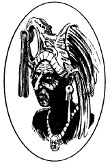

不朽者科特利克罗塔
不朽者科特利克罗塔（Coetlicrota the Undying）
僵尸王，中立邪恶
力量： 20
敏捷： 8
体质： 18
智力： 10
灵知： 10
魅力： 12
防御等级： 6
移动力： 6
等级/生命骰数：6
生命值：40
零级命中率：15
攻击次数：2
攻击/伤害：拳头（2d4/2d4）
特殊攻击：恶臭，命令死灵，复活死者
特殊防御：免疫影响心灵和生命的法术（Immune to mind & life-affecting spells）
魔法抗力：无
战斗：身为僵尸王的科特利克罗塔是一个可怕的敌人。与他的同类一样，科特利克罗塔浑身上下包裹着如坟地令人作呕的腐肉味。任何接近他30尺的角色都必须进行一次对抗毒药的豁免检定，失败则受到恶臭的影响，城主按下表投掷1d6决定其后果。
D6
点数
效果
1 虚弱（相当于法术
虚弱术）
2 疾病（相当于法术
造成疾病）
3 -1体质（永久）
4 疫病 （相当于法术
疫病术）
5 在1d6轮内，角色因呕吐而无法行动
6 角色立即死亡，并变成僵尸，受到科特利克罗塔的控制
任何在科特利克罗塔视野内的僵尸都会成为其心灵控制的目标。这些僵尸包括僵尸兽与巫毒僵尸，但不包括黄麝僵尸和黏液僵尸这样的假僵尸。此外，科特利克罗塔还可借用周围一英里以内的任何僵尸的感官来收集信息。
每日一次，科特利克罗塔可以使用一次活化尸体将一名死者转化为僵尸。除了《玩家手册》中描述的法术效果外，科特利克罗塔的咒语还可以直接作用在凡人身上，任何生命骰少于6的生物（具有6个或更多HD的生物对此免疫）都可能受到这个法术的影响，受术者必须进行一次对抗死亡魔法的豁免检定，失败则立刻死亡，且在1d4轮内，这个不幸的受害者的尸体会化为新的僵尸。
科特利克罗塔可以随意的与死者交谈，使他能从死在他手上的受害者那里学到很多东西。没有一具尸体能拒绝这个恶魔的问题。科特利克罗塔还可以随意与视野内的一个或所有不死生物进行精神沟通。
虽然科特利克罗塔免疫各种影响心灵和活物的魔法，例如魅惑人类和睡眠术。但是这名僵尸王并非是坚不可摧的，圣水和圣徽可以对他造成2d4的伤害，在被斥退时视为吸血鬼。此外，古代印加帝国的圣金也能牵制住他。科特利克罗塔无法越过一条印加圣金粉所画成的线；那些失落之民制造的武器会对他造成双倍伤害，而非印加制的武器虽能伤害，却无法彻底毁灭科特利克罗塔。如果以非印加制的武器杀死了科特利克罗塔，那么他就会在神圣的金字塔中心再度复活，追杀那些敢于攻击他的人类。
巢穴：科特利克罗塔隐藏在南美洲茂盛丛林中，他的老巢是一座废弃的印加神庙。在这个巨大的阶梯金字塔，他就是执掌生与死的绝对主宰。在每个战斗轮中，他都能通过颂念出古老的秘密词语，使所有听到这个词语的人都必须进行对抗死亡的豁免检定，失败则立即被杀死。只需一个简单的手势，他就能令这座恐怖建筑内的被害者重获新生。
围绕在僵尸王身上的恶臭同样弥漫在这个金字塔内。任何进入金字塔的人都会受到影响，就像他们靠近科特利克罗塔30尺以内那样（见上文）。如果在这之后，一名角色接近僵尸王本尊的30尺范围内，该角色必须对僵尸王的恶臭再次进行一次豁免检定。
背景：特兹卡特利波卡是一名侍奉印加国王阿塔瓦尔帕的潜修者。国王与他的随从们在如今的秘鲁利马附近与西班牙探险家皮萨罗会面（详见第七章：哥特地球地图）。特兹卡特利波卡从这场背叛和杀戮中逃出生天，与一小队随从消失在了丛林深处。特兹卡特利波卡无力拯救他的人民，只能绝望的看着那些欧洲侵略者的暴行。在下一轮满月升起的时刻，特兹卡特利波卡举行了一场黑暗而邪恶的仪式，他发誓要以自己所有的魔法力量为代价，换取为人民血债血偿的机会。红死魔，或是别的什么，回应了他的愿望。仪式结束后，特兹卡特利波卡和他的追随者死去了。而在下一次满月之时，僵尸王特兹卡特利波卡以及他麾下的僵尸军团，随月光一起升起。
